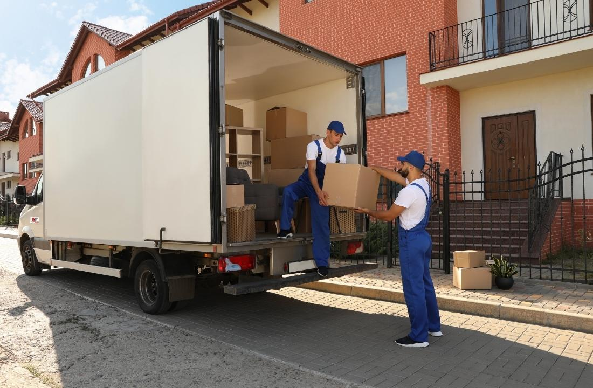
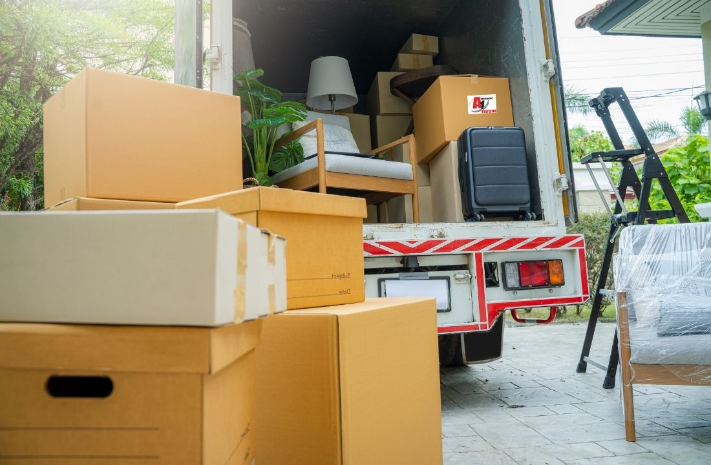
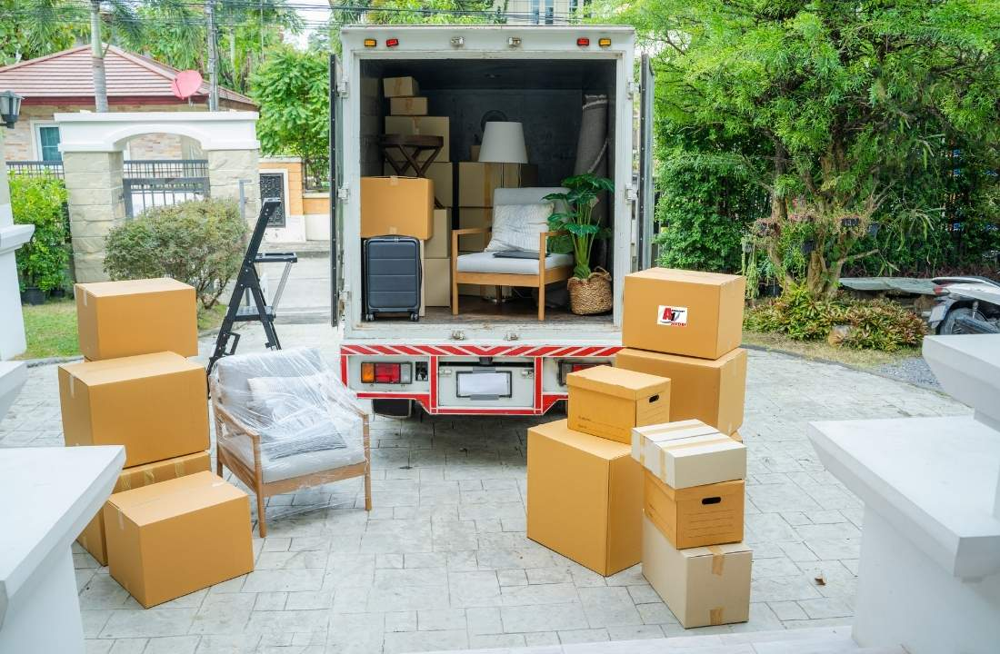

-A1 SELIDBE BEOGRAD-
PREVOZ I SELIDBE
KOMPLETAN VODIČ ZA BEZBRIŽNU I EFIKASNU SELIDBU UZ A1 AGENCIJU
Ključan koraci za svaku uspešnu promenu adrese su prevoz i selidbe. Pravi izbor transporta i dobra organizacija olakšavaju preseljenje i štede vreme, novac i živce. U ovom vodiču saznaćete kako da odaberete pouzdanu uslugu, izbegnete najčešće greške i pripremite se za dan selidbe bez komplikacija.
Objašnjavamo kada su kombi preseljenja najbolji izbor, šta sve utiče na cenu, kao i koje dodatne usluge mogu povećati sigurnost vaših stvari. Pratite naše savete i osigurajte efikasan i bezbedan prevoz tokom celog toka selidbe.
Ukratko
- Odabir pravog prevoza i agencije je ključan za bezbrižnu selidbu.
- Cena selidbe zavisi od više faktora – dobro planiranje donosi uštedu.
- Kombi selidbe su idealne za manja i gradska preseljenja.
- Dodatne usluge i dobra priprema povećavaju sigurnost i efikasnost prevoza.

KAKO IZABRATI PRAVU USLUGU ZA PREVOZ I SELIDBE?
Prilikom izbora prave usluge za prevoz i selidbe, ključno je da procenite svoje potrebe i upoznate se sa vrstama vozila i usluga koje su na raspolaganju. Na tržištu postoje tri glavne opcije:
| Vrsta prevoza | Idealno za | Prednosti |
|---|---|---|
| Kombi selidbe | Manje stanove, pojedinačne prostorije, studente | Niža cena, brza i laka organizacija, lak pristup uskim ulicama |
| Kamionske selidbe | Veće stanove, kuće, kancelarije | Veći kapacitet, idealno za obimne selidbe, sigurniji transport |
| Profesionalne agencije | Kompletna organizacija, zahtevni ili specifični zahtevi | Pouzdanost, dodatne usluge (pakovanje, demontaža), osiguranje |
Na izbor prevoza utiču sledeći faktori:
- Udaljenost selidbe – Za kraće relacije često su dovoljna kombi vozila, dok za međugradske selidbe ili preseljenja u inostranstvo preporučujemo veća vozila i profesionalce.
- Količina i tip stvari – Veća preseljenja zahtevaju kamion za selidbe, dok se za manji broj stvari ili osetljiv nameštaj može koristiti kombi.
- Budžet – Kombi varijanta je najjeftinija, ali profesionalne agencije za selidbe nude više sigurnosti i dodatnih usluga.
Prednosti angažovanja profesionalaca
- Zaštita i osiguranje stvari tokom prevoza
- Brže i efikasnije pakovanje, utovar i istovar
- Raspoloživost dodatnih usluga (npr. Montaža i demontaža nameštaja, transport specifičnih predmeta)
- Ušteda vremena i izbegavanje stresa povezanim sa samostalnom organizacijom
Ukoliko želite najbezbedniji prevoz i selidbe, kao i kompletnu logistiku, razmislite o angažovanju profesionalne agencije kao što je A1 agencija za selidbe Beograd, koja pokriva selidbe u Beogradu i širom Srbije.
KOJE SU NAJČEŠĆE GREŠKE PRI ORGANIZACIJI PRESELJENJA I KAKO IH IZBEĆI?
Prilikom organizacije selidbi, najčešće greške mogu dovesti do nepotrebnog stresa, dodatnih troškova i oštećenja vaših stvari. Evo na šta najviše treba obratiti pažnju:
Loše pakovanje i neadekvatna zaštita stvari
- Nepakovanje stvari u čvrste kutije i nedostatak zaštitnih materijala (npr. pucketave folije, ćebadi) često rezultira oštećenjima tokom prevoza i selidbe.
- Mešanje teških i lomljivih predmeta u istoj kutiji može dovesti do lomljenja.
- Zaboravljanje da se obeleže kutije otežava raspakivanje i povećava šanse za gubitak stvari.
- Ako niste sigurni kako bezbedno spakovati vrednosti, pogledajte naš članak za pakovanje stvari i saznajte kako da vaša imovina stigne neoštećena na novu adresu.
Nedovoljno planiranje vremena i logistike
- Podcenjivanje vremena potrebnog za pakovanje i selidbu često vodi do žurbe, preskakanja važnih koraka i komplikacija.
- Nepostojanje jasnog plana selidbe (redosleda utovara i istovara, rezervacije lifta, osiguranje parking mesta za kombi selidbe) može usporiti ceo proces.
- Nepravovremena rezervacija termina kod agencije za prevoz i selidbe može značiti da nećete imati slobodan datum kad vam je najpotrebnije.
Pogrešan izbor prevoza ili agencije
| Greška | Posledica | Kako izbeći |
|---|---|---|
| Izbor vozila pogrešne veličine | Više vožnji, veći trošak i gubitak vremena | Precizno proceniti količinu stvari i konsultovati se sa agencijom |
| Unajmljivanje nestručne agencije | Rizik od oštećenja, kašnjenja ili skrivenih troškova | Izabrati proverenu agenciju, pročitati recenzije i tražiti preporuke |
| Nepotrebno angažovanje velikog kamiona za mali stan | Plaćate više nego što je potrebno | Za manje selidbe birajte kombi selidbe – praktičnije su i povoljnije |
Pravilna organizacija, kvalitetno pakovanje i izbor odgovarajuće usluge za prevoz i selidbe ključni su za izbegavanje najčešćih problema i nepotrebnih troškova.
KOMBI SELIDBE: KADA SU NAJBOLJI IZBOR I KOJE SU NJIHOVE PREDNOSTI?
Kombi selidbe predstavljaju odličan izbor za specifične situacije kada veći transport nije neophodan, a brzina i fleksibilnost su prioritet. Najčešće se kombi koristi za manja preseljenja, kao što su preseljenja garsonjera, manjih stanova, kancelarija ili za prevoz pojedinačnih komada nameštaja i tehnike. Ovakav prevoz je posebno praktičan u urbanim sredinama poput Beograda, gde su gradske ulice često uske, a parking ograničen. Ako selidba u Beogradu uključuje teže pristupačne lokacije, kao što su dvorišta, sokaci ili mesta sa zabranom za veće kamione, kombi je najpraktičnije rešenje.
| Karakteristika | Kombi selidbe | Kamionski prevoz |
|---|---|---|
| Zapremina/kapacitet | manji (do ~18 m³) | veći (25+ m³) |
| Fleksibilnost | veća, lakše parkiranje i manevrisanje | ograničena zbog dimenzija |
| Idealno za | manje selidbe, gradske lokacije | veće selidbe, kompletni stanovi/kuće |
| Cena | niža | viša/kuće |
| Brzina utovara/istovara | brža | sporija |
Prednosti kombi selidbi ogleda se u njihovoj ekonomičnosti i mogućnosti da se brzo prilagode potrebama klijenata. Cena kombi selidbe je gotovo uvek niža u odnosu na kamionski prevoz, što je značajan faktor ako imate ograničen budžet ili selite manju količinu stvari. Naša A1 agencija za selidbe omogućava brzu organizaciju i realizaciju selidbi na teritoriji Beograda, što je posebno važno kada su u pitanju hitna ili preseljenja u poslednjem trenutku.
Fleksibilnost kombi prevoza je velika prednost: vozila lakše dolaze do ulaza i mogu pristupiti mestima gde kamioni ne mogu, što smanjuje vreme nošenja tereta i ubrzava sam proces. Takođe, za one koji planiraju dostavu ili transport samo jednog ili dva komada nameštaja, kombi je najisplativija opcija. U slučaju da imate specifične zahteve za prevoz i selidbe — na primer, transport klavira ili drugih velikih instrumenata kontaktirajte A1 i mi ćemo na bezbedan način uraditi preseljenje vaših stvari na novu lokaciju.

SELIDBE BEOGRAD CENA: ŠTA SVE UTIČE NA CENU PREVOZA?
Troškovi za prevoz i selidbe u Beogradu zavise od više faktora, pa je korisno znati šta sve utiče na formiranje konačne cene. Pravilnim planiranjem možete značajno optimizovati budžet i izbeći neprijatna iznenađenja.
Koji faktori najviše utiču na cenu selidbi?
- Udaljenost: Cena je niža za selidbe unutar istog dela grada, dok se za veće relacije (npr. iz centra ka prigradskim opštinama) tarife uvećavaju.
- Spratnost objekta: Selidbe stanova na višim spratovima bez lifta zahtevaju više radne snage i vremena, što direktno podiže cenu.
- Količina i vrsta stvari: Veće količine nameštaja, bele tehnike ili specifičnih predmeta (npr. sefovi, klaviri) zahtevaju više vozila i radnika.
- Dodatne usluge: Pakovanje, demontaža/montaža nameštaja, zaštita osetljivih stvari i slične opcije obračunavaju se posebno.
Prosečne cene selidbi u Beogradu
| USLUGA | CENA |
|---|---|
| Cena kombi selidbe u gradu | od 4000 din |
| Cena kombi selidbe van grada | 50 - 60 din/km |
| Cena selidbe kamionom u gradu | od 6000 din |
| Cena selidbe kamionom van grada | 70 din/km |
Ove cene su okvirne i mogu varirati u zavisnosti od specifičnosti posla. Za preciznu kalkulaciju najbolje je kontaktirati A1 agenciju za selidbe Beograd koja nudi besplatnu procenu na terenu i transparentne ponude.
Saveti za optimalnu organizaciju i uštedu
- Racionalno spakujte stvari i odbacite nepotrebno pre preseljenja — manja količina znači nižu cenu prevoza.
- Birajte kombi selidbe za manje stanove ili kada imate ograničenu količinu stvari, jer su znatno povoljnije od kamionskih varijanti.
- U dogovoru sa agencijom, fleksibilno ugovorite termin — radnim danima i van “špica” često su niže tarife.
- Pitajte unapred za sve dodatne troškove (ulazak u zonu centra, nošenje na visoke spratove, parkiranje) da biste izbegli skrivena povećanja cene.
Ako imate posebne potrebe, kao što je selidba specijalnog tereta, preporučuje se angažovanje naše specijalizovane ekipe.
KAKO SE PRIPREMITI ZA DAN SELIDBE I ŠTA OČEKIVATI TOKOM PREVOZA?
Priprema za dan preseljenja zahteva dobru organizaciju i jasno određene obaveze između klijenta i agencije za prevoz i selidbe. Evo konkretnih koraka i saveta koji će vam pomoći da posao protekne glatko, bez nepotrebnog stresa:
Praktični saveti za pakovanje i obeležavanje stvari
- Pakujte sistematski: Svaku prostoriju pakujte odvojeno, a kutije označite nazivom prostorije i sadržajem (npr. „Kuhinja – posuđe“).
- Teške stvari u male kutije: Knjige, alat i slične teže predmete stavljajte u manje kutije kako bi se lakše prenosile.
- Zaštitite lomljive stvari: Upotrebite pucketavu foliju, stare novine ili odeću za umotavanje stakla, porcelana i elektronike.
- Obavezno označite kutije sa lomljivim sadržajem nalepnicom „PAŽNJA“.
- Pripremite osnovne stvari za prvi dan (posteljina, osnovni pribor, dokumenta) u posebnoj, jasno obeleženoj kutiji.
Obaveze klijenta i agencije za prevoz i selidbe
| Obaveza | Klijent | Agencija |
|---|---|---|
| Pakovanje i obeležavanje | Da (osim ako nije ugovoreno drugačije) | Po dogovoru (doplata za pakovanje) |
| Demontaža nameštaja | Po potrebi, ili uz doplatu agenciji | Po dogovoru sa klijentom |
| Utovar/istovar | Ne | Da |
| Prevoz | Ne | Da |
| Priprema parkinga | Da (osigurajte slobodan prilaz) | Po potrebi savetuje klijenta |
Najvažnije je unapred proveriti sve detalje sa izabranom agencijom. A1 vam nudi jasnu podelu odgovornosti i mogućnost dogovora oko svakog koraka, što dodatno olakšava proces preseljenja.
Šta raditi u slučaju nepredviđenih situacija?
- Oštećenje stvari: Odmah prijavite štetu agenciji i napravite fotografije. Ozbiljne agencije nude osiguranje robe tokom prevoza.
- Kašnjenje vozila: Kontaktirajte dispečera agencije kako biste dobili informaciju o novom vremenu dolaska.
- Nedostatak parkinga: Ako nije moguće naći mesto, dogovorite alternativu sa vozačem što pre.
- Neočekivana količina stvari: Ako imate više kutija nego što ste naveli, obavestite agenciju unapred da bi pripremili adekvatno vozilo ili dodatnu radnu snagu.

DODATNE USLUGE I SAVETI ZA BEZBEDAN I EFIKASAN PREVOZ TOKOM SELIDBI
Prilikom organizacije prevoza i selidbe, dodatne usluge agencija mogu značajno olakšati i ubrzati ceo proces. Najčešće ponuđene dodatne usluge uključuju:
- Montaža i demontaža nameštaja – profesionalci brzo i bezbedno rastavljaju i sastavljaju ormare, krevete i druge komade, čime se smanjuje rizik od oštećenja.
- Paketiranje i materijal za pakovanje – agencije nude zaštitne folije, kutije i profesionalno pakovanje, što je ključno za lomljive i vredne stvari.
- Skladištenje stvari – ako postoji period između iseljenja i useljenja, stvari možete skladištiti u sigurnim prostorima na dogovoreno vreme.
Za zaštitu vrednih i lomljivih stvari tokom selidbe:
- Zamolite radnike da koriste zaštitne materijale poput mehurićave folije, stiropora ili specijalnih pokrivača za nameštaj i tehniku.
- Označite kutije sa lomljivim sadržajem (LOMLJIVO) i napomenite agenciji šta zahteva poseban oprez.
- Za selidbe antikviteta, klavira i osetljivih instrumenta izaberite agencije koje nude specijalizovane usluge, kao što je naša A1 kako biste izbegli svaku štetu tokom transporta.
Kako proveriti pouzdanost agencije i vozila
- Proverite iskustva prethodnih klijenata na internetu i pitajte za preporuke.
- Insistirajte da vam pokažu slike vozila namenjena za prevoz i selidbe – kvalitetno opremljeni kamioni i kombiji sprečavaju oštećenja i omogućavaju sigurnu manipulaciju teretom.
- Proverite na njihovom sajtu koje sve usluge nude i na šta se obavezuju
Kombinovanjem dodatnih usluga i pažljivim izborom proverene agencije, preseljenja postaju znatno sigurnija i jednostavnija, bez iznenadnih troškova i oštećenja.
Zaključak
Bez obzira na to da li se selite sami ili angažujete profesionalce, dobra priprema je ključ bezbrižne i efikasne selidbe. Pravilnim izborom usluge i izbegavanjem čestih grešaka, možete znatno olakšati ceo proces i zaštititi svoje stvari od oštećenja.
Pre nego što krenete u organizaciju preseljenja, detaljno razmotrite svoje potrebe, informišite se o cenama i opcijama, i napravite plan korak po korak. Tako ćete biti sigurni da su vaši prevoz i selidbe bezbedani, brzi i bez stresa. Počnite odmah sa planiranjem i napravite svoje preseljenje što jednostavnijim ili kontaktirajte A1 agenciju, jer je angažovanje profesionalaca uvek najsigurnije rešenje!